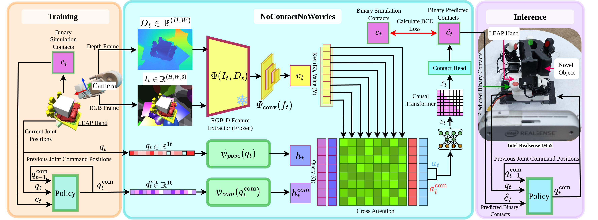
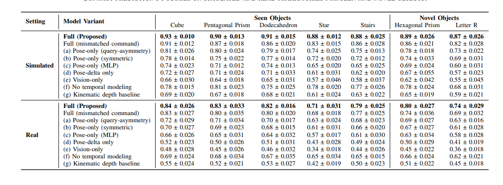

Estimating Contact through Vision and Proprioception for In-Hand Dexterous Manipulation
Perceiving physical contact is fundamental to dexterous manipulation. While robots often rely on dedicated tactile sensors, humans exhibit a remarkable ability to infer contact by integrating visual information with an innate sense of their body's pose and movement. Inspired by this embodied perceptual skill, we investigate whether a robot can learn to "see" contact — an approach that also offers a scalable alternative to tactile hardware, which faces practical challenges in cost, fragility, and integration.
We present NoContactNoWorries, a transformer-based multimodal framework that fuses RGB-D vision with the robot's proprioception to infer binary contact states as a pseudo-tactile signal for hand-object interactions. We validate by training a single contact prediction model on multiple objects and show that the inferred contact signal can support downstream reinforcement learning agents for in-hand object reorientation, generalizing well to novel objects not seen during training. Experiments in both simulation and on a real-world robot validate our approach, highlighting the feasibility of inferring contact from vision and proprioception.

Our framework combines RGB-D observations with robot proprioception to predict binary contact states between the robotic hand and the manipulated object. The predicted contact signal serves as a pseudo-tactile representation and is provided to a downstream reinforcement learning policy for dexterous in-hand manipulation.
